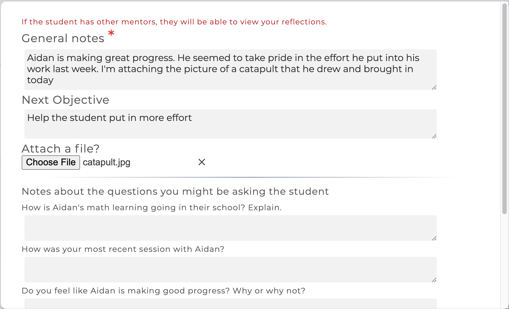

    <div id="rnotes_2.1" class="row justify-content-center section-container">
      <div class="col-md-9 row justify-content-center">
        <div class="blue-header col-md-12 center">
          Version 2.1 released June 17, 2020!
        </div>
        <div>
          PL&sup2; version 2.1 has been released! Please take a moment to read
          about the latest features that are now available in the app (<a
            target="_blank"
            href="personalizedlearning2.org"
            >personalizedlearning2.org</a
          >).
        </div>

        <div class="sub-header">Mentors</div>
        <div>
          On your home page we have added a search box so that you can filter
          the list of students shown. This search allows you to filter by
          students' first or last names. If you are an Admin for your school you
          will also see the search box on your Admin page.
        </div>
        <div class="release-note-img">
          
        </div>

        <div>
          You can now add files to any reflection that you write for a student.
          As with any comments in your reflections, other mentors of the student
          will be able to download files attached to a reflection. The 'x' next
          to the filename can be used to remove an added file.
        </div>
        <div class="release-note-img">
          
        </div>

        <div class="bottom-pad">
          On the
          <a href="https://pl2.andrew.cmu.edu/PL2/Settings" target="_blank"
            >Settings</a
          >
          page there is now an information graphic explaining how the student
          status is computed. Click on the "Student Category Computation
          Explanation" link to view.
        </div>

        <div>
          The Resource Assistant was introduced with the last release and
          provides a means for locating suggested resources after answering
          questions about your student. However, sometimes you already know the
          specific resource you want to use so we added an Advanced Search for
          navigating resources. In addition to filtering by pinned resources and
          the intended users (students or mentors), you can sort the resources
          by name, usage or chronological order and you can search by resource
          name.
        </div>
        <div class="release-note-img">
          
        </div>
        <div class="release-note-img">
          
        </div>

        <div>
          You can now assign a resource to all of your students at once. The
          "Assign to Students" drop-down list on a Resource includes an option
          to Select all students. Similarly you can use this to remove the
          resource assignment from all students.
        </div>
        <div class="release-note-img">
          
        </div>

        <div class="bottom-pad">
          In the above image you can see an example of the "breadcrumbs" that we
          have added to several pages in the app (here they are: Home > Alyssa
          Peters > Resources > Competence-building...). Breadcrumbs show the
          trail of pages you clicked to get to the current page and allow for
          easy navigation back to an earlier page. For instance, in this example
          you can go directly back to the student (Alyssa) page from this
          resource or back to the list of Resources that included the resource
          page you are on.
        </div>

        <div>
          If a resource has a file attached you can now preview that file in the
          app without having to download it. For example, this is the preview
          image for the 'MATHia Seeking Help' resource.
        </div>
        <div class="release-note-img">
          
        </div>

        <div class="sub-header">Admins</div>

        <div>
          We have redesigned the Admin page to have four tabs: Mentors &
          Students, Mentor & Student Data, Resource Usage and Default Settings.
          The Mentors & Students tab displays a list of students, by mentor,
          where each student name is a link that you can use to change the
          student's profile (e.g., assign them to a different mentor or change
          which EdTech the student is using). You can also use this page to
          remove the student from your roster. On the Mentor & Student Data tab,
          you can view usage data for the mentors and students, both in a table
          form or graphically. Clicking on a student's name in the Student Data
          table will take you to that student's dashboard. The Resource Usage
          tab gives information for how the PL&sup2; resources are being used by
          your mentors. Also on this tab is a list of resources that mentors at
          your institution have created. You can choose to upgrade these
          resources, making them available to all mentors at your school.
        </div>
        <div class="release-note-img">
          
        </div>
        <div class="release-note-img">
          
        </div>

        <div class="bottom-pad">
          With this release we have added support for a new EdTech option:
          <a href="http://aleks.com" target="_blank">ALEKS</a>. If you are
          already using ALEKS with your students or are interested in learning
          more about how we are using ALEKS data in the app, please
          <a href="contact.html">contact us</a>.
        </div>

      </div>
    </div>